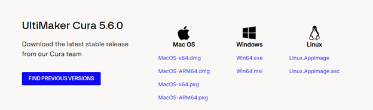
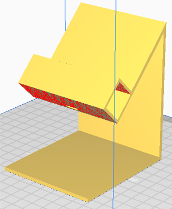

3D Printing
This is where I document the 3D printing assignment and learn using Ultimaker Cura.
What I have learned in this part:
Cura
Installing Cura
Changing parameters
Import file into cura
Slicing and checking
Assignment
Creating phone holder
Importing file into cura
Slicing and checking
Loading gcode into sd card
Printing and end results
Installing Cura:
First I go to this website to download and install Cura: https://ultimaker.com/software/ultimaker-cura/#downloads

Figure 1: Downloading
After installation, I ran the program and skipped the first few parts and got right in
Figure 2: Adding 3D printer
Figure 3: Adding non UltiMaker printer
Changing Parameters:
After adding a printer, click on manage printer and select Creality Ender-3 v2 and click on machine settings
Figure 4: Preferences page
Add this line at the bottom of Start G-code: “M420 S1 ; BL touch auto-levelling”
Importing file into Cura:
After creating a 3d object via Autodesk Fusion 360, You can export it as a .STL file (binary) You can find the option from Utilities > Make > 3D Print and select the parameters to send to cura
Figure 5: Exporting to Cura
After doing this, it should automatically move to Cura, which you can edit it before printing
Figure 6: Imported model
Slicing and Checking:
After you check and add support structures (if needed), Click on slice to get it ready for printing
After you click on slice, you will get an approximate timing on how long will it take to print out the chosen object (for mine it is 48 minutes).
Figure 7: Amount of time needed to print
To reduce the print time, you can edit the scale of the object using Scale
Figure 8: Editing the scale of object
After editing the scale of the object, you can see the time taken to print has shortened
Figure 9: Went from 48 to 16 minutes
When you are happy with the results, you can choose to save to local drive or into a microSD card to transfer to the machine
Figure 10: Exporting G-code
After you are done exporting, you can eject the sd card and transfer it to the printer (If it doesn’t have wireless connection).
Assignment:
The assignment that was given to me is to 3D print out a phone holder. The steps below is how I made it:
After designing the phone holder inside Autodesk Fusion 360, I export the file by going to Utilities > Make > 3D Print. Afterwards, I select the object of choice and set the format to .STL(Binary) and send the print utility to Cura as shown below:
Figure 1: Setting params before sending to Cura
After sending clicking on OK, Cura will automatically pop up and load your file as shown

Figure 2: Imported model from Fusion 360
Since this positioning is unoptimized, I will rotate this thing to the side to make it print faster and use lesser support structures using the Rotate tool.
Figure 3: Rotate and potate to the side
After rotation, I will slice it to see how long will it take…
Figure 4: Yikers
Damn, that is a very long time to wait for a single part, what about modifying the parameters of the standard quality to make it print faster?
Params of settings:
Layer height: 0.25 mm
Print speed: 80 mm/s
Build plate Adhesion type: Brim
Figure 5 & 6: Quality, Speed and Build Plate Adhesion
Now let me try slicing it again…
Figure 7: Much better
Now, moving on, I take the micro sd card from the T1441 classes’ 3D printer (Creality Ender-3 V2) and save the .gcode file into the card and clicked on save.

Figure 8: Saving as Gcode file
After doing so, I slot the card back in and navigate to the part I want printed and clicked on print, after it does its initialization, it starts printing out and it starts off looking like this:
Figure 9: Starting print
After 6 hours and 20 minutes, I came back and picked it up.
This is all for now!!
Last Updated on 9/12/2023